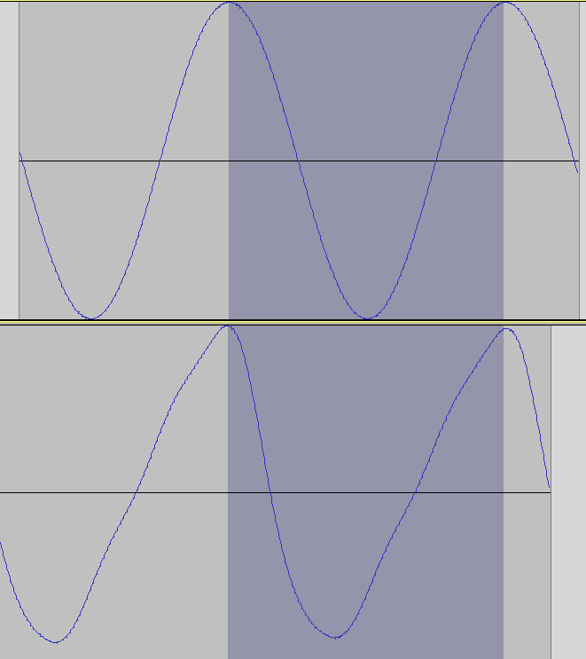

Signal Processing
Digital Signal Processing (DSP) is at the core of my research and creative practice. This section explores algorithms for spectral transformation, real-time pitch detection, and advanced sound synthesis techniques.
Methodology
Most of these implementations are developed using a combination of C++, Python, and specialized environments like SuperCollider or Max/MSP, focusing on low-latency performance for live artistic applications.
// Conceptual FFT Windowing
void processFrame(float* buffer, int size) {
applyHanningWindow(buffer, size);
fft.execute(buffer);
}